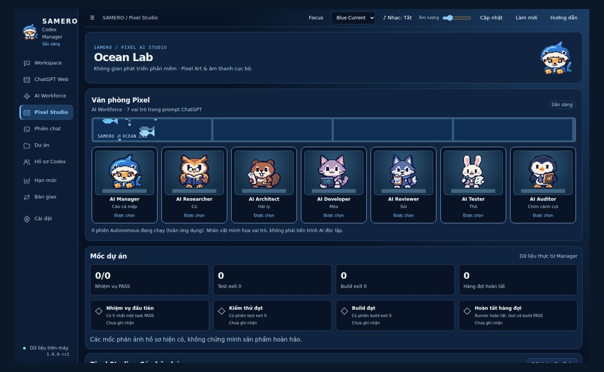

Autonomous Mode
Plan tasks, run tests and save checkpoints with Codex. Recover from supported errors within approved permissions.
WEBSITE 1.0 / FIRST LOOK
SAMERO brings Codex organization, project progress and Pixel Studio together in a creative Windows workspace.
Windows 10/11 x64 · Portable · unsigned EXE 1.0.0 RC1 · Requirements & limitations
Motion-graphics film based on actual interface previews; not a recording of a running Windows session.
01 / PRODUCT TOUR
Explore key areas of the application preview. This is not a live Codex session.

Screenshot of the running 1.0.0 RC1 app in a test environment.
02 / WORKFLOW
Tools to organize your AI-assisted development workflow.
Plan tasks, run tests and save checkpoints with Codex. Recover from supported errors within approved permissions.
Manage folders, profiles, sessions, logs and progress. View limits reported by Codex.
Preserve acceptance evidence and restore or hand over saved state with confirmation.
Read project text files, preview structured edits and confirm before writing.
Store goals, knowledge, tasks and results across development cycles. Prepare the next prompt.
Seven research, coding, testing and review roles collaborate within ChatGPT prompts. They are not independent background agents.
03 / OCEAN LAB
Seven roles, seven personalities. New launch artwork for the website.
 ManagerCoordinate
ManagerCoordinate ResearcherResearch
ResearcherResearchIllustrated prompt roles, not independent active agents. The 1.0.0 RC1 executable uses this same sprite set.
Preview the website accent colors. The app offers six themes, three offline tracks and Focus Mode.
04 / DOWNLOAD
Website 1.0 · Available software: 1.0.0-rc1. Both downloads contain the same release candidate.
WINDOWS X64 / RC1
Run directly on Windows x64, no extraction needed.
↓ Download EXEWINDOWS X64 / PORTABLE
EXE, guide, test report and accompanying assets.
↓ Download ZIPSHA-256 is not a substitute for code signing or security checks.
33ab84b599bc4246055d8ec0e4bf6c3c94a355e36fe607bb1ee664df6f8b2b4005 / GETTING STARTED
This unsigned release candidate has not completed real Windows, authenticated Codex and full regression testing. Run only software from a trusted source; do not disable Windows protections.
Download the EXE or extract the portable bundle. Open SAMERO, check the CLI in Settings and add a Codex profile and project. Back up data before upgrading.
No. SAMERO is an independent workflow tool for Codex and ChatGPT, not an official OpenAI product.
SAMERO does not provide AI access or extra limits. Codex and ChatGPT remain subject to their providers’ accounts, limits and terms.
Local Bridge and Continuous Development are assisted workflows: send a prompt, receive edits, confirm and record progress. They do not automate the ChatGPT website or run independent agents 24/7. Autonomous Mode uses Codex App Server and depends on permissions, limits, connectivity and test results.
Manager metadata is stored locally under %LOCALAPPDATA%\SAMERO Codex Manager. CLI history is managed by Codex. AI services may process submitted content. This site has no sign-in forms or analytics.